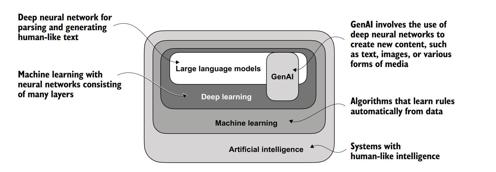
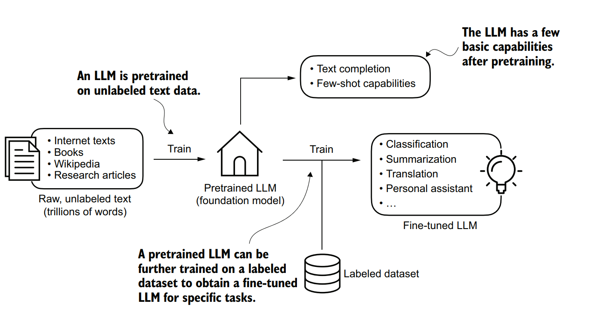
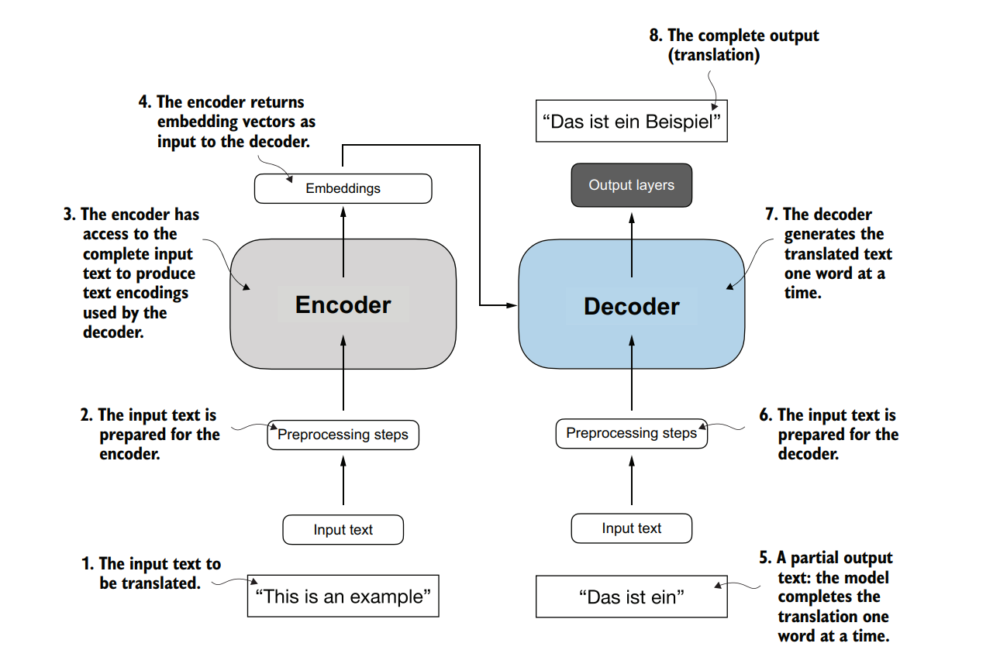
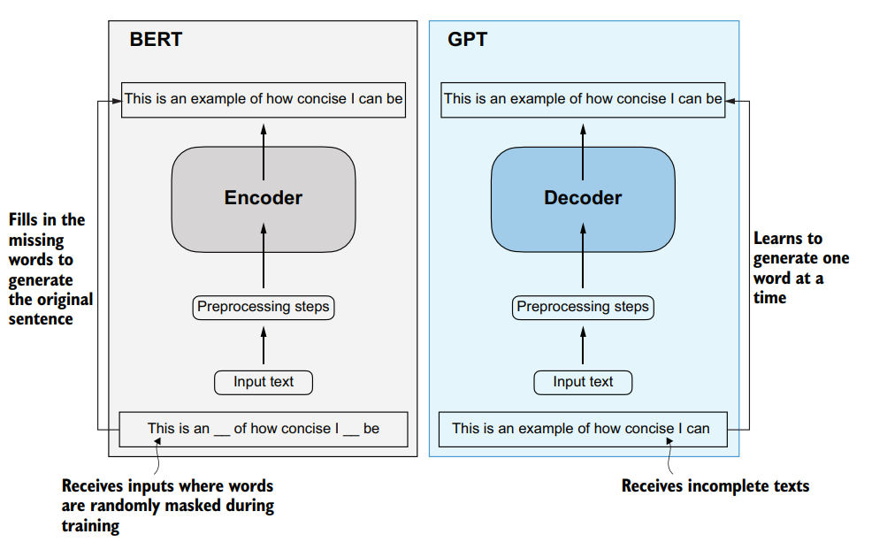
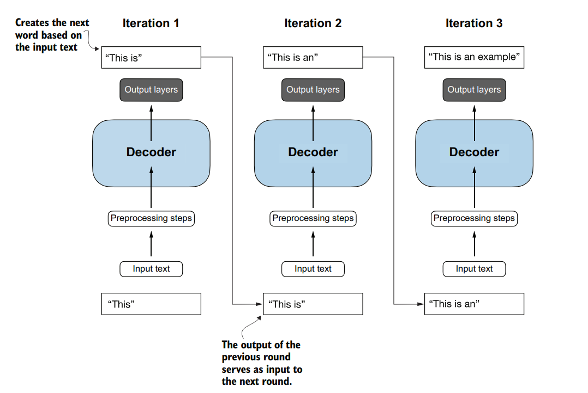

Large Language Models (LLMs) have transformed how we build software, process natural language, and design interactive systems. At their core, these models are deep neural networks trained to process, understand, and generate text that reads naturally to humans. To work effectively with LLMs, developers need to understand how they process text, how they are constructed, and what architectural elements make them so capable.
Key Takeaways
- LLMs are neural networks based on the transformer architecture, utilizing self-attention to process text.
- Building LLMs requires two steps: broad pretraining on raw text and target-specific fine-tuning.
- Encoder-only models excel at classification, whereas decoder-only architectures are optimized for text generation.
What is a Large Language Model?
An LLM is a neural network designed to understand, generate, and respond to human language. Modern architectures often contain tens or hundreds of billions of parameters. They're simply the adjustable weights optimized during training to predict the next token in a sequence. What exactly makes these models so powerful? LLMs use the transformer architecture. This design allows the model to pay selective attention to different parts of the input sequence, helping it capture the subtle nuances of human language.

LLMs are a specialized application of deep learning, which is a subset of machine learning. While machine learning encompasses algorithms that learn from data, deep learning uses multilayer neural networks to process complex structures like text.
How Are LLMs Pretrained and Fine-Tuned?
Building a production-ready LLM involves two distinct training stages: pretraining and fine-tuning.
During the pretraining phase, the model is trained on a massive, diverse corpus of unlabeled raw text. Here, raw text simply refers to unstructured, natural language without any annotations or labels. By predicting the next word in a sequence across billions of documents, the model develops a foundational understanding of language structure, grammar, facts, and basic reasoning.
Once pretraining is complete, this foundational base model is specialized through fine-tuning. This phase uses smaller, labeled datasets to adapt the model. Developers typically use two categories:
- Instruction Fine-Tuning: The model is trained on query-response pairs, learning to execute commands or answer questions (for example, translating text or summarizing a document).
- Classification Fine-Tuning: The model learns to associate text inputs with categorical labels, which is useful for tasks like spam detection or sentiment analysis.

Pretraining trains the LLM on next-word prediction using raw text. Fine-tuning subsequently optimizes the model using smaller, task-specific labeled datasets.
What is the Transformer Architecture?
Most modern LLMs rely on the transformer, a deep neural network architecture introduced in the 2017 paper "Attention Is All You Need". The original transformer design consists of two submodules: an encoder and a decoder. The encoder processes the input text, converting it into numerical vectors (embeddings) that capture contextual meaning. The decoder module takes these encoded vectors and generates the output text.

The original encoder-decoder transformer configures the encoder to process input text into embeddings, which the decoder uses to generate translated text one word at a time.
A critical component of this architecture is the self-attention mechanism. How does this attention mechanism work? It allows the model to calculate how much weight to place on every other token in a sequence when processing a specific word. Because it evaluates relationships across the entire sequence simultaneously, self-attention excels at capturing long-range dependencies that traditional recurrent neural networks struggle to process.
Over time, researchers adapted the transformer into specialized sub-architectures:
- Encoder-only models (like BERT): These models focus on masked word prediction, where the network predicts hidden words within a sentence. This approach makes them highly effective for text classification and categorization tasks.
- Decoder-only models (like GPT): These models focus on generating coherent, sequential text, which makes them ideal for tasks like machine translation, summarization, and writing computer code.

Encoder-only models (left, like BERT) predict masked tokens for classification tasks. Decoder-only models (right, like GPT) generate contiguous text sequences.
While the terms "transformer" and "LLM" are often used interchangeably, they aren't identical. The transformer is a general-purpose neural network architecture. While it forms the basis of most modern LLMs, developers also use transformers for computer vision and audio processing. Conversely, some LLMs use alternative designs, such as recurrent or convolutional architectures, rather than transformers.
How Does the GPT Architecture Work?
GPT models use a decoder-only architecture. They generate text by predicting one word at a time in an autoregressive fashion, meaning the model feeds its previous outputs back into its input sequence for future predictions. This continuous feedback loop helps ensure the generated text remains coherent over longer passages.
As these designs evolved, their scale increased. While the original 2017 transformer used six encoder and decoder layers, GPT-3 scaled up to 96 transformer layers and 175 billion parameters.

GPT uses a decoder-only architecture with unidirectional, left-to-right attention to generate text iteratively, one token at a time.
Although the original transformer model, consisting of encoder and decoder blocks, was explicitly designed for language translation, GPT models - despite their larger yet simpler decoder-only architecture aimed at next-word prediction - are also capable of performing translation tasks. This capability was initially unexpected to researchers, as it emerged from a model primarily trained on a next-word prediction task, which is a task that did not specifically target translation.
The ability to perform tasks that the model wasn’t explicitly trained to perform is called an emergent behavior. This capability isn’t explicitly taught during training but emerges as a natural consequence of the model’s exposure to vast quantities of multilingual data in diverse contexts. The fact that GPT models can “learn” the translation patterns between languages and perform translation tasks even though they weren’t specifically trained for it demonstrates the benefits and capabilities of these largescale, generative language models. We can perform diverse tasks without using diverse models for each.
Now that we’ve laid the groundwork for understanding LLMs, in the subsequent blogs let's code one from scratch. We'll start with text tokenization and encoding, code the attention mechanisms and implement the GPT model from scratch.